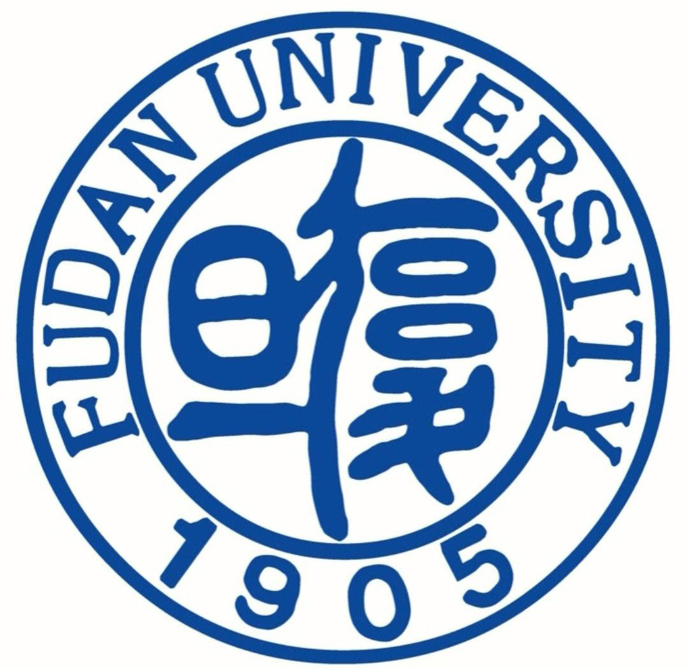

Exploration of Business
2023/01-2023/02 Worked as a strategy and product intern at ByteDance.
2022/11-2023/01 Worked as a strategy consulting intern at POPMART.
2022/09-2022/10 Worked as an investment intern at Cyanhill Capital, focusing on consumer industry.
2022/06 Participated in 2022 Citi Cup Fintech Innovation Competition, and won the national second prize.
2022/05-2022/12 Worked as a project consultant at A Better Community, deeply participated in HR and Compensation Research in Public Welfare Industry.
2022/05 Joined 2022-2023 PTA Pool at Oliver Wyman, and have participated in 1 project so far.
2022/04-2022/07 Worked as a public affairs intern at Source Code Capital, conducting research on policies.
2022/01-2022/04 Worked as an industry research intern at CICC, focusing on consumer industry.
2021/12 Joined 2022 Spring PTA Pool at BCG, and have participated in 4 projects so far.
2021/07-2021/12 Worked as an industry research intern at Orient Securities, focusing on light industry.
2021/05 Participated in 2021 Bain Cup Case Competition, starting my journey of consulting.
|
Experience
|  |
M.A. Department of Management, Fudan University
2023.08 - 2025.12(expected)
|
 |
B.A. Department of Journalism and Communication, Tsinghua University
2019.08 - 2023.06
|
Template borrowed from Jon Barron. Thanks for stopping by :)
© 2023 Yulan Chen
|